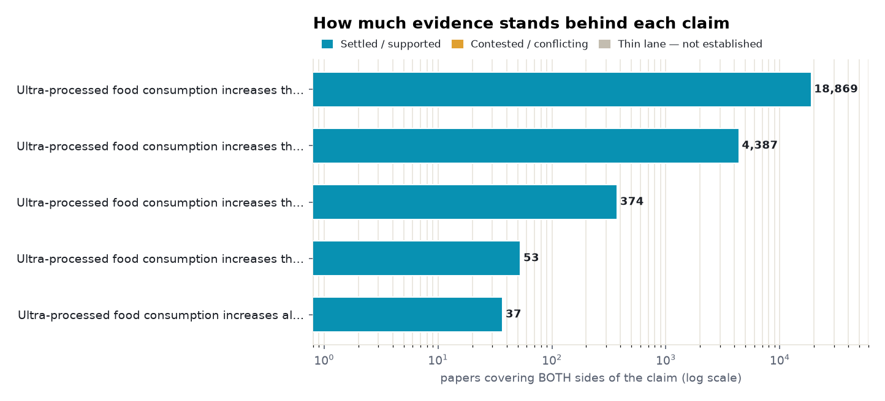
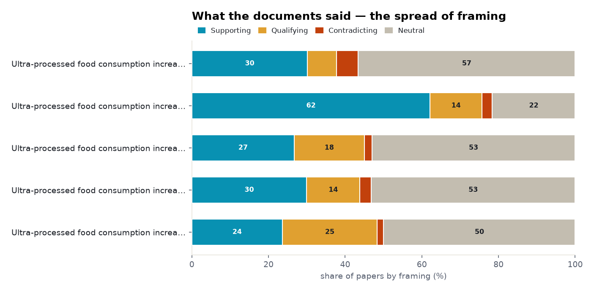
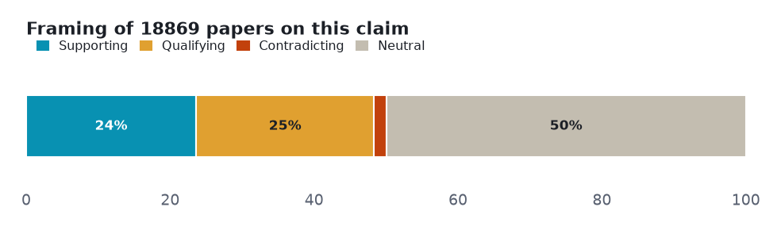
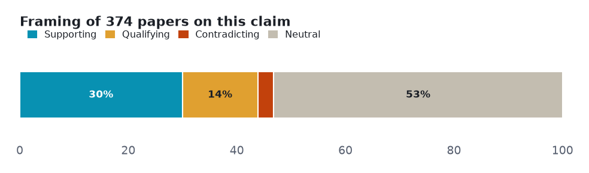
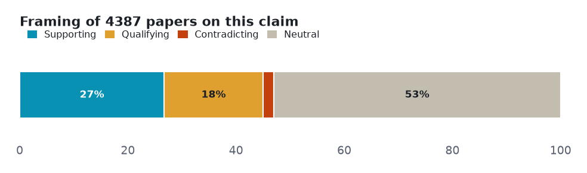
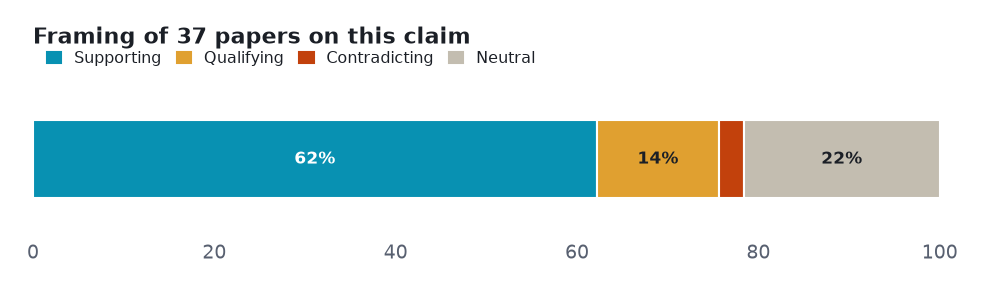
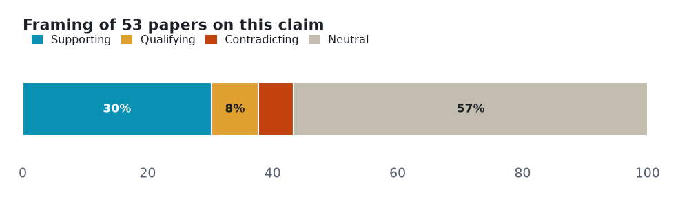
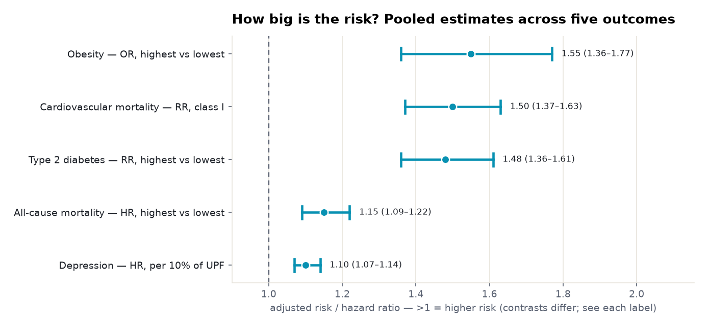
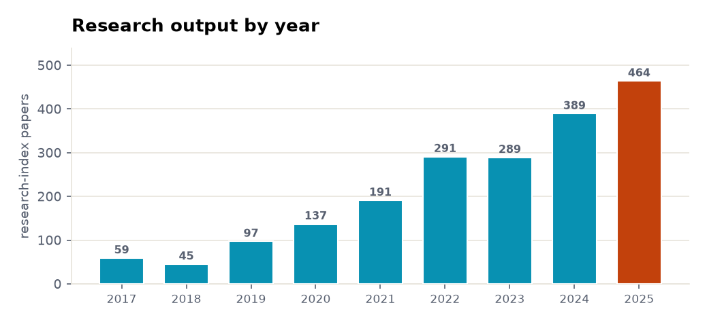
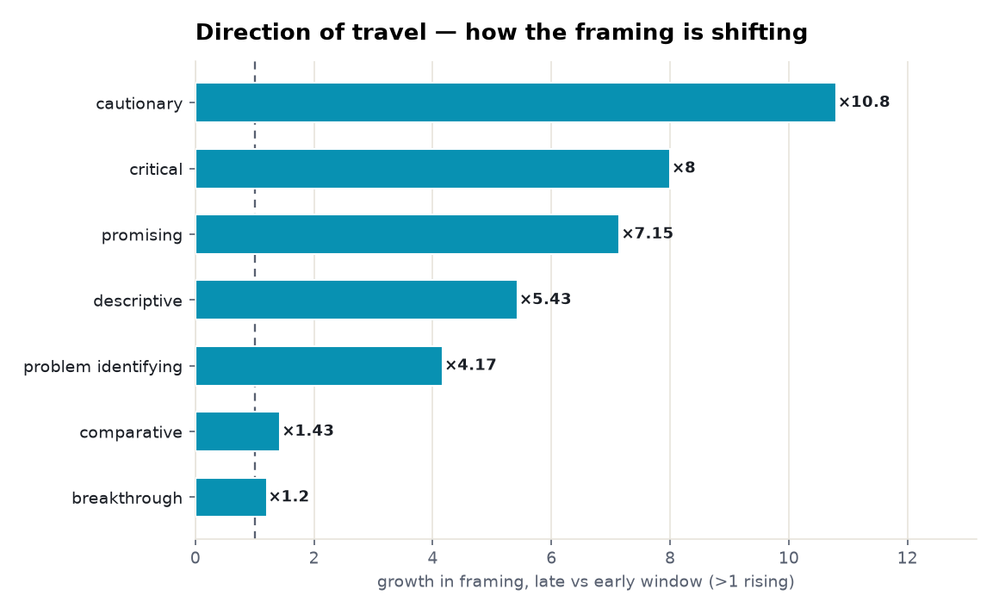

Five health outcomes, one direction of travel: ultra-processed food shows a consistent association with harm — strongest for obesity, diabetes and heart disease — but every lane is observational, and causation is the open question.
Every number below is retrieved, not generated. Each angle is a claim run against the research layer on both sides — the papers that affirm it and the papers that push back — so the verdict reflects how much evidence exists and which way it leans, not a single cherry-picked study. Effect sizes are quoted verbatim and verified; thin lanes are reported as inconclusive rather than charted as fact.
| Subject | ultra-processed foods and health |
| Retrieved | 2026-11-07 |
| Coverage | research typed 107% · research 104.2% · biomedical 100% |
| Source | Prism public API — research.evidence (one call per angle) |
Each section is one claim. The bar shows how the papers framed it — supporting, qualifying (yes, but…), contradicting, or neutral — and the verdict weighs that spread against how deep the evidence runs. A claim can be loudly discussed yet thinly evidenced; the brief says which.
Two cross-cutting views before the angle-by-angle read: how much both-sides evidence each claim has, and how the literature splits on framing.


Mostly positive framing, with a substantial cautionary minority. The deepest lane by far — 18,869 papers on both sides, with a convincing pooled association, but also the clearest confounding debate: an E-value analysis asks whether the link is causal or confounded, and paediatric evidence is genuinely mixed.

Common findings
Verdict: Well supported · both-sides papers: 18,869 · mean stance: +0.09 · contested: 26.4%
A consistent dose-response signal, with no contradicting papers in the read set. Multiple 2025 meta-analyses converge around a risk ratio of 1.4–1.5 for the highest versus lowest intake, backed by a 13% increase per 10% of UPF in the diet.

Common findings
Verdict: Well supported · both-sides papers: 374 · mean stance: +0.15 · contested: 16.8%
Mostly positive framing, with a substantial cautionary minority. Graded 'convincing' (class I) in a BMJ umbrella review — yet the certainty on that same estimate is rated very low; a strong, consistent association resting on observational cohorts.

Common findings
Verdict: Well supported · both-sides papers: 4,387 · mean stance: +0.12 · contested: 20.2%
Overwhelmingly positive framing, which on a citation-weighted corpus can mean consensus or can mean publication bias. A real pooled signal, but a thinner lane (37 papers on both sides) with high heterogeneity (I² = 83%); the brief flags the framing itself as a caution, not just the estimate.

Common findings
Verdict: Supported · both-sides papers: 37 · mean stance: +0.38 · contested: 16.2%
Mixed framing with no dominant lean, but the read documents point one way. The newest and smallest lane — a reproducible hazard ratio near 1.10 across a cohort meta-analysis and a target-trial emulation, pointing the same direction as the metabolic outcomes.

Common findings
Verdict: Supported · both-sides papers: 53 · mean stance: +0.14 · contested: 13.2%
Pooled effect sizes as a real forest plot — point estimate and 95% confidence interval, each verified against its source.

Common findings
The field's own tempo: research-index papers on this subject per year, from 59 in 2017 to 464 in 2025.

Across 939 papers, the framing is shifting — how much each orientation grew in the late window versus the early one. Above 1× is rising; below 1× is fading.

Common findings
Counts and shares measured from the data. Effect sizes quoted verbatim and verified against their source. Every lane here is observational; the brief reports the association and flags where certainty is graded low or the lane is thin, rather than asserting causation.
Each angle is one call against the research-evidence layer: the claim is posed, both sides of the literature are retrieved, and the framing tally is computed from the returned papers. Thin lanes are named, not inflated — the point of the exercise is to show where the evidence is deep, where it is contested, and where it barely exists.
A Prism worked example. Charts are generated from the retrieved data; every quoted finding is verbatim and verified. data.json holds the underlying numbers.